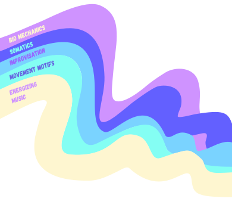
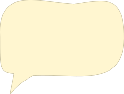
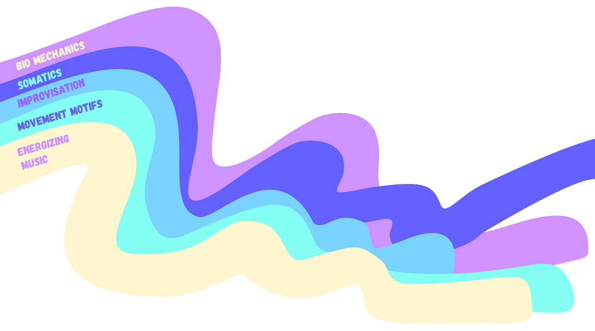

Kinetic Waves
Fridays 9:30–11:30am
@ The Berkeley Finnish Hall


Summer Session
Starts July 17!

Summer Session
Starts July 17!

Upcoming Classes
Friday Morning Dance Class rooted in the study and application of The Axis Syllabus©
Facilitated by AS Teacher Candidate, Marcus van Duren
$20 drop in / Notaflof
We begin by zooming in on a particular anatomical relationship, body part, or concept. We then explore it through solo movement and/or hands-on partner work.
At some point a movement motif or phrase is suggested and we take some time to learn the proposed pattern together. We focus on phrase work for two reasons: to explore new movement pathways, and more importantly, to make deeper contact with the principles at hand. Some things are more easily felt at speed, or in causal relationship with what comes before and after. Often the phrase corresponds to a rhythmic motif of the music, helping us to feel moments of suspense, bounce, or recoil as we ride the waves of gravity.
Lastly, we use what we have explored as a jumping off point for improvisation and research. Ultimately, this class is about opening a space for people to conduct research with their own bodies. A place to practice the discipline of moving in good respect to your functional anatomy and unearth the joyous potentials of moving in concert with thousands of years of evolution. This class is an invitation for you to come into closer relationship with yourself and the world around you. A space to listen to, and harmonize with, the nature that you are.
The Axis Syllabus is an educational perspective and reference system for human movement that is assembled, revised and tested by a growing international network of dancing researchers and was initiated in the mid 90's by the American dancer, teacher, author and choreographer Frey Faust. (definition from Movement Artisans)
Syllabus Telegram
Group Join Here